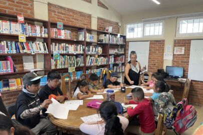
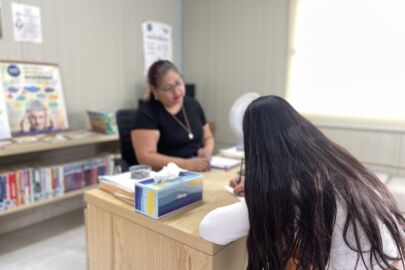
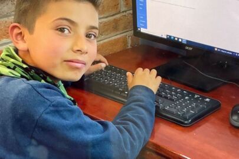
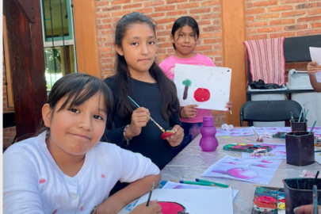
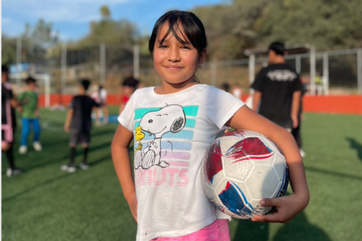
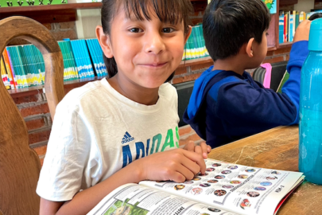
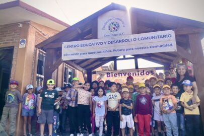
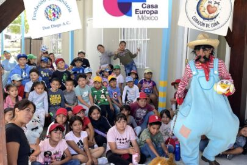
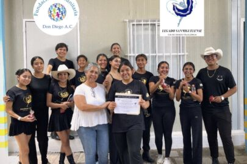

Fundación Comunitaria Don Diego
Para mayor información: +52 (415) 104 95 46
dondiegofoundation@gmail.com

Hemos construido un Centro Educativo para complementar la educación primaria y secundaria con programas de alta calidad.

Nuestro equipo de psicólogas trabajan con padres de familia y con alumnos de todas las edades.

Uso de la tecnología para mejorar las habilidades académicas y personales de los estudiantes.

El desarrollo de la creatividad a través de las clases de arte
Tenemos en marcha un apoyo para personas en la comunidad que sufrieron una pérdida , con la terapia de una experta Tanatóloga.

Con un nuevo campo deportivo de alta calidad, construido en el complejo del Centro de Educación.

Aprender a leer es crucial para el desarrollo y el éxito de los niños en la escuela y más allá.
“ En la Fundación Comunitaria Don Diego tenemos planes de trabajo para las Niñas adolescentes, y un programa de Prepa Pro, para ayudar a jóvenes madres que dejaron la escuela al quedar embarazadas``
¿Porqué Fundación Comunitaria? ¿Porqué en Don Diego?
Decidimos crear esta organización altruista como una “Fundación Comunitaria”, con el
propósito de enfocarnos en una área específica, para fomentar el desarrollo integral del
pueblo, abordar varias necesidades, para romper el ciclo de la pobreza.
Esperamos incluir otras organizaciones sin fines de lucro con objetivos similares para ayudar a esta comunidad. Seleccionamos esta comunidad específica, después de una larga investigación, debido a la gran cantidad de personas jóvenes que viven allí, con diversas necesidades y también varias aspiraciones para tener un mejor futuro, y por el interés de esta comunidad para involucrarse.
La comunidad es oficialmente llamada Santa Teresita de Don Diego.
Los programas que tenemos, en orden de prioridad, son: educación en todas las áreas, apoyo psicológico y salud.
Centro Educativo
Lo que la gente dice:
Gracias a la Fundación Comunitaria he podido continuar mis estudios, ya que los tuve que abandonar por falta re recursos y esta fue una excelente opción para seguir estudiando, ¡muchas gracias!

Proyecto
¡Nuestro plan!
Nuestros Valores
Fundación Comunitaria Don Diego
Misión
Fomentar el desarrollo local con la participación de la gente, vinculando varios sectores de la sociedad y otras organizaciones no gubernamentales.
Esto con el fin de atraer recursos para elevar el nivel de vida de la comunidad.
Visión
Prevemos una comunidad con más equidad y justicia, oportunidades de crecimiento y una mayor autosuficiencia.
Valores
-Respeto por la gente local
-Igualdad
-Transparencia en el uso de los recursos
-Innovación y trabajo en equipo
Protección a la niñez
En la Fundación comunitaria Don Diego A.C. estamos comprometidos con la protección y salvaguarda de los niños y jóvenes y adultos vulnerables. Entendemos como protección, el implementar las medidas para proteger la salud, bienestar y derechos humanos de los individuos, que permitan a la comunidad, en especial a los niños, jóvenes y adultos vulnerables, vivir libres de abusos, daños y negligencias.
Nuestra razón de ser como fundación es acompañarlos en su crecimiento resguardando sus virtudes, fomentando en toda la comunidad un ambiente de prevención y cuidado, para que en todas las familias se realicen prácticas que protejan a las familias, a menores y personas vulnerables.
Nuestro Equipo de Voluntarios
Noticias
Actividades realizadas durante el mes

Un verano lleno de aprendizaje, creatividad y alegría en Fundación Comunitaria Don Diego A.C.
Hoy viernes 07 de agosto del 2026, llegamos al último día de nuestro Curso de Verano en Fundación Comunitaria Don Diego A.C., cerrando una experiencia llena de aprendizajes, creatividad, convivencia y momentos que quedarán en la memoria de nuestras niñas y…

Casa Europa presenta “Títeres Corazón de Luna” en el Curso de Verano de Fundación Comunitaria Don Diego A.C.
Como parte de las actividades del Curso de Verano, este 05 de de agosto del 2026, la Fundación Comunitaria Don Diego A.C. tuvo el gusto de recibir la visita de Casa Europa con la presentación del espectáculo “Títeres Corazón de Luna”, una experiencia…

Legado Sanmiguelense fortalece el aprendizaje cultural en el Curso de Verano de Fundación Comunitaria Don Diego A.C.
En el marco de las actividades del Curso de Verano, la Fundación Comunitaria Don Diego A.C. el día 03 de agosto del presente año, recibió con gran entusiasmo la visita de Legado Sanmiguelense Compañía de Danza Folclórica de San Miguel de…